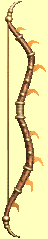

Artefakty
| Jméno: | Dareba | |
| Útok: | +14 | |
| Zranìní: | 3d3+14 | |
| (Rychlost +40, rychlosti) Prastará a ztøe¹tìná okouzlení pøedurèují Darebu k tanci po nepøátelských hrdlech. Nikdo neví, kdy nebo kde byl Dareba ukován, ale jeho vílí pùvod je nepøehlédnutelný. | ||
| Cena: | 20000 | |
| Jméno: | Guvernérova zbroj | |
| Zbroj: | +36 | |
| (Polovièní zranìní støeleckými útoky, +10 do v¹ech statistik) Tato fantastická zbroj, pùvodnì patøící koloniálnímu guvernérovi Padishovi v dobì Ticha, se bìhem vìkù nìkolikrát objevila mezi tìmi nejskvìlej¹ími poklady. Jako jiné výrobky Nebeské výhnì i tato zbroj je témìø neznièitelná. Její výrobu by zøejmì ji¾ nezvládla ¾ádná dílna kdekoliv na zemi. | ||
| Cena: | 20000 | |
| Jméno: | Charele | |
| Útok: | +18 | |
| Zranìní: | 3d9+18 | |
| Ukován z rozkazu Harecka I. bìhem utváøení regnanského "císaøství", byl Charele pojmenován podle královy man¾elky - královny Charele. Po Hareckovì smrti jedem v roce 590 A.S. byl Charele ponechán v jedné regnanské pevnosti v Erathii. | ||
| Cena: | 20000 | |
| Jméno: | Katan | |
| Útok: | +12 | |
| Zranìní: | 3d6+12 | |
| (Zhouba nemrtvých, drakù a démonù) Upøímnì øeèeno, ponìkud rozmarná zbraò. Katan byl ukován Mekorigem Slepým s cílem ukonèit Vìk monster a zahájit vìk èlovìka. Vzne¹ená my¹lenka, ale ne zcela naplnìná. Katan se mnohokrát na mnoho let ztratil, jen aby byl nalezen nìkterým dobrodruhem v nìjakém draèím pokladu. Síla zbranì nejednou popohánìla dobrodruhy, aby se s Katanem vydali k dal¹ímu draèímu pokladu, kde se opìt zbraò na roky ztratila. | ||
| Cena: | 20000 | |
| Jméno: | Korzár | |
| Útok: | +13 | |
| Zranìní: | 2d4+13 | |
| (Kradení +5, odstranìní pastí +5, ¹tìstí +40) Korzár je jednou z nejskvìlej¹ích zbraní, jaké se kdy dostali z regnanských zbrojnic. Jak odpovídalo místním zvyklostem, regnan¹tí kováøi ukovali tuto zbraò tak, aby vyhovovala snahám císaøských "výbìrèích daní", a» ji¾ pùsobili na otevøeném moøi, nebo v pøímoøských mìstech. Do de¹ních dnù Regna nevyrobila jedinou zbraò, která by nevyjadøovala smìrování za egoistickými cíli na úkor cílù druhých. | ||
| Cena: | 20000 | |
|  | Jméno: | Odysseus |
| Støelba: | +10 | |
| Zranìní: | 5d2+10 | |
| (Pøesnost +50, 9-12 bodù zranìní vodou) Sen lukostøelcù. Odysseus nepotøebuje ¾ádné ¹ípy, nebo» støílí ledové støely, vytváøené pøi nata¾ení tìtivy. Jeho pùvod je neznámý, ale zpracování je elfské. | ||
| Cena: | 20000 | |
| Jméno: | Pùliè | |
| Útok: | +11 | |
| Zranìní: | 4d2+11 | |
| (Explozivní dopad, odolnost proti ohni +50) Pøesto¾e jde o mocnou zbraò, nebyl Pùliè nikdy nikým vlastnìn pøíli¹ dlouho. Èepel pøi zásahu vyvolá mohutný ohnivý úder, mocná magická ochrana proti ohni je tak silná, ¾e dr¾itele zbranì úspì¹nì pøed úèinkem tohoto úderu za¹títí. | ||
| Cena: | 20000 | |
| Jméno: | Ruce mistra | |
| Zbroj: | +12 | |
| (Beze zbranì +10, uhýbání +10) Ruce mistra byly zamý¹leny pro mnichy, ale skvìle je vyu¾ilo i nìkolik zlodìjù. Mnoho jejich majitelù dosáhlo ¹tìstí a slávy, ale tomu poslednímu se to zjevnì nezdaøilo. | ||
| Cena: | 20000 | |
| Jméno: | Sedmimílové boty | |
| Zbroj: | +15 | |
| (Rychlost +40, magie vody) Jsou pojmenovány podle své schopnosti zvy¹ovat nositelovy reflexy a prodlu¾ovat krok. Jejich skuteènou funkcí je zesilovat znalost vodní magie a tím zvy¹ovat rychlost chùze. Kdokoliv u¾ívá tìchto bot, je pøedurèen k velikosti, ale ne nutnì ke slávì. Jejich pøedchozím vlastníkù lze pøièíst nejednu lotrovinu. | ||
| Cena: | 20000 | |
| Jméno: | Vládcùv prsten | |
| (magie mysli, magie temnoty) Vládcùv prsten byl vyroben v roce 744 A.S. Joshuou Stomem, pøedstaveným alchymistù u nighonských èarodìjnic. Aèkoliv nejde zcela o artefakt zla, prsten byl vyroben pro ovládání a dobývání a k nièemu jinému. | ||
| Cena: | 20000 | |
| Jméno: | Wallace | |
| Útok: | +12 | |
| Zranìní: | 3d4+12 | |
| (Mistr zbraní +10, osobnost +40) Wallace si po staletí jaksi nalézal cestu do rukou vzbouøencù a zbojníkù. Zbraò zvy¹uje schopnosti i pøesvìdèivost svého vlastníka a vede ho tak do riskantních akcí, kterým by se jinak vyhnul. Aèkoliv ale ¾ádná z tìchto nadìjí majitele meèe nebyla naplnìna, pøesto nikdy nikdo tento meè neodmítl, jak jednou zaslech jeho mámivou píseò. | ||
| Cena: | 20000 | |
| Jméno: | Yoruba | |
| Zbroj: | +60 | |
| (Imunita vùèi nemoci, ¹ílenství, ochromení, otravì, usnutí a zkamenìní, odolnost +25) Yoruba, mimoøádnì pevné a magicky odolné plátové brnìní, je pojmenované po svém výrobci a majiteli. Vzhledem ke své vysoké cenì byla Yoruba stavìna po èástech, co¾ je na ní vidìt. Rozdílné díly jsou vyrobeny z rozdílných materiálù, z nich¾ nejdra¾¹ích bylo pou¾ito pro ukování krunýøe. Na kyrysu jsou dosud dva prora¾ené otvory, které pùvodní majitel nikdy nezacelil, zøejmì ze sentimentálních dùvodù. | ||
| Cena: | 20000 | |
| Jméno: | Zhouba ghúlù | |
| Zbroj: | +15 | |
| Zranìní: | 1d9+15 | |
| (Zhouba nemrtvých, imunita proti ochromení, 3-18 bodù zranìní ohnìm) Zhouba ghúlù byla vytvoøena pøed více ne¾ 150 lety Chrámem Slunce jako prostøedek úsilí potøít rostoucí populaci nemrtvých, stvoøených Chrámem Mìsíce. Bez ohledu na to, jak je silná, je to jediná zbraò a nemrtvých jsou zástupy. Chrám Slunce padl v roce 1083 A.S. | ||
| Cena: | 20000 | |
| Jméno: | ®elezný brk | |
| Útok: | +10 | |
| Zranìní: | 4d5+10 | |
| (Síla +40, 6-15 bodù zranìní vzduchem) Neskuteènì lehký obouruèní meè zvy¹uje sílu vlastníka, èím¾ mu usnadòuje boj tì¾kou zbraní. Díky tomu by bylo témìø mo¾né jej pou¾ívat jednou rukou, ale velká délka meèe to znemo¾òuje. | ||
| Cena: | 20000 | |
copyright 2002 - 2022 by Petr 'Elemir' Levák v¹echna práva vyhrazena